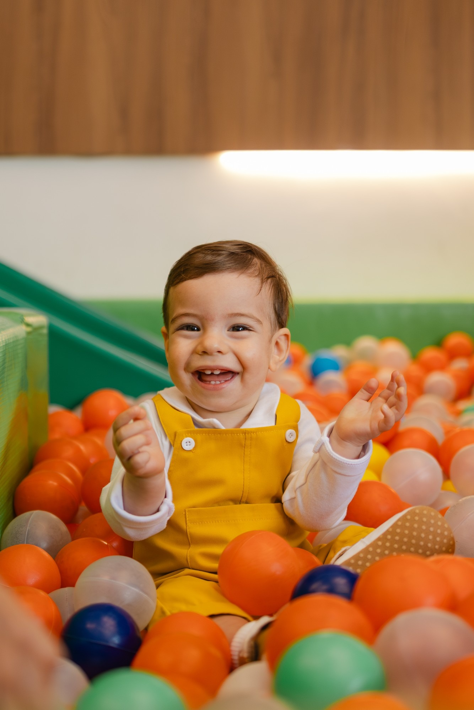
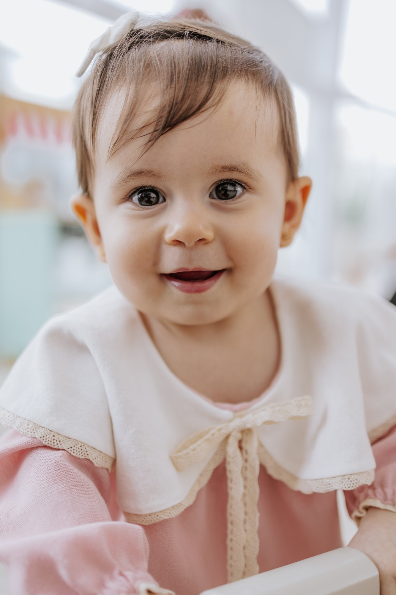
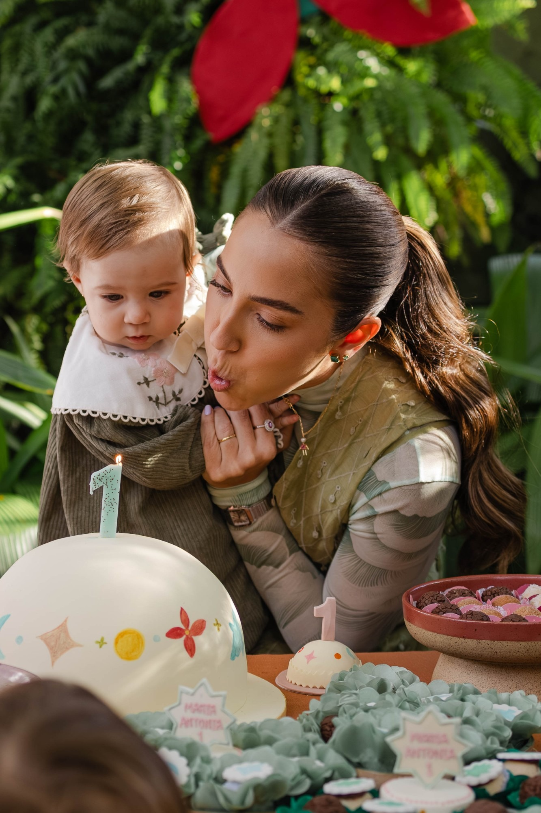
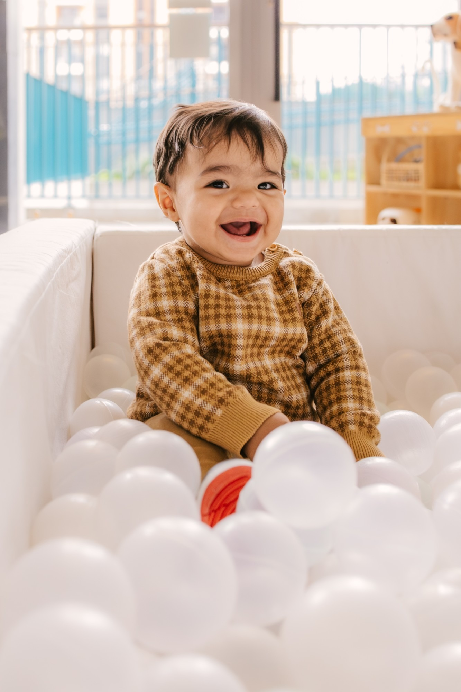
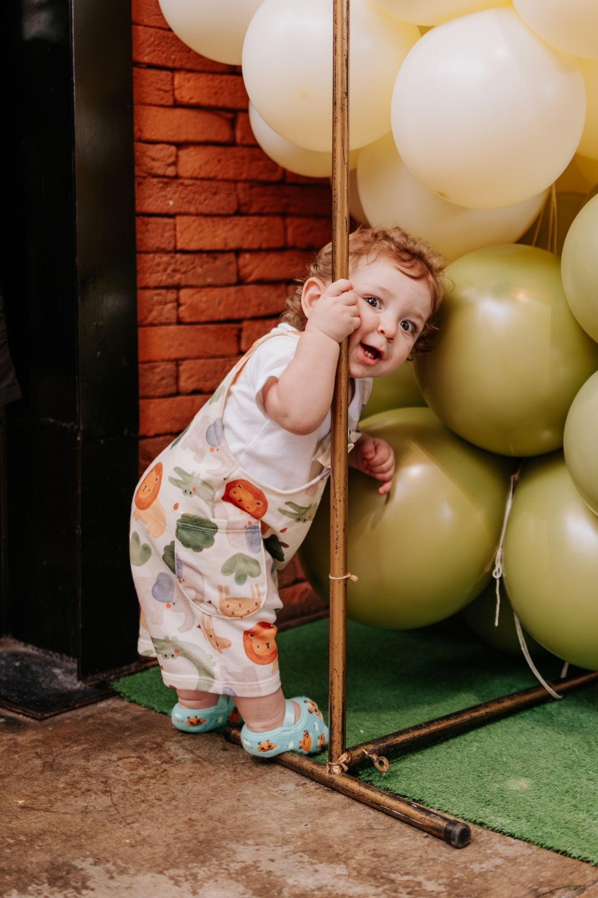
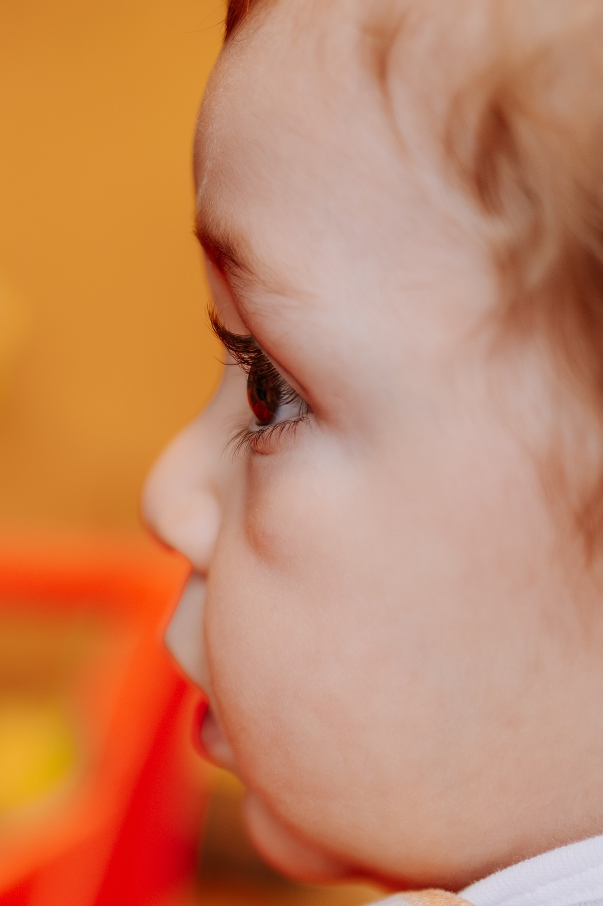
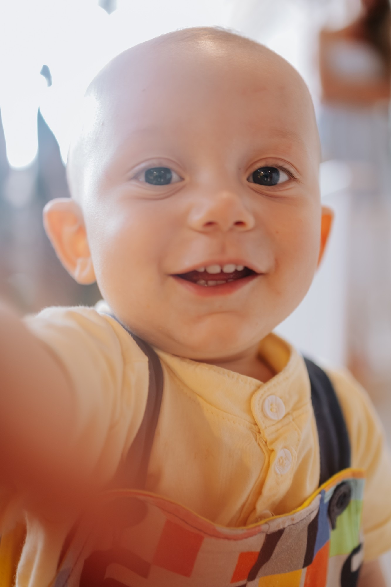

Festa de 1 ano
(e o que é mais pros adultos)

Funciona · 1
Bebê descansado brinca, sorri e aguenta a festa inteira.
Nas fotos: expressões leves do começo ao fim.

Funciona · 2
Lá pelo fim, o cansaço chega e o parabéns vira choro.
Nas fotos: o bebê tranquilo e curioso na hora mais importante.

Funciona · 3
Tapete, bolinhas, instrumentos, brinquedos de encaixe.
Nas fotos: brincadeira de verdade, sem precisar de pose.

Funciona · 4
Bebê que engatinha precisa de liberdade. E sempre tem bolo, suco ou baba no caminho.
Nas fotos: ele livre pra explorar a festa toda.

Nessa idade, costuma não funcionar
Muitos bebês se assustam com barulho e com rostos grandes que não conhecem.
São ótimos, mas pras crianças maiores. O bebê de 1 ano quase não usa.

E se quiser alguém registrando tudo isso, me manda a data.